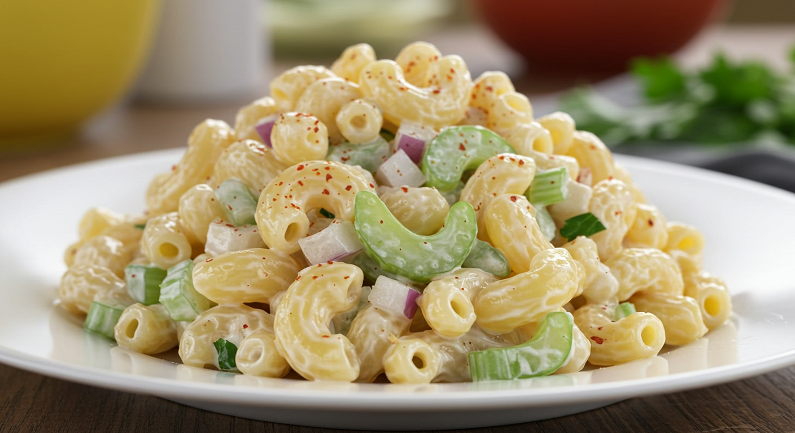

Macaroni Salad

Classic macaroni salad is a creamy and flavorful side dish that's a staple at picnics, barbecues, and potlucks. It typically features cooked elbow macaroni tossed with a rich dressing made from mayonnaise, vinegar, mustard, and a touch of sugar for balance. Diced vegetables like celery, red onion, and bell peppers add crunch and color, while ingredients such as boiled eggs or pickles can enhance the taste.
This salad is best served chilled, allowing the flavors to blend and develop over time. It's easy to prepare in advance and pairs well with grilled meats, sandwiches, or fried chicken. Classic macaroni salad offers a comforting combination of tangy, sweet, and savory flavors, making it a timeless favorite for casual meals and festive gatherings alike.
Ingredients
- 4 cups uncooked elbow macaroni
- 1 cup mayonnaise
- ⅔ cup white sugar, or to taste
- ¼ cup distilled white vinegar
- 2 ½ tablespoons prepared yellow mustard
- 1 ½ teaspoons salt
- ½ teaspoon ground black pepper
- 2 stalks celery, chopped
- 1 large onion, chopped
- 1 green bell pepper, seeded and chopped
- ¼ cup grated carrot (Optional)
- 2 tablespoons chopped pimento peppers (Optional)
Steps
- Gather all ingredients.
- Bring a large pot of lightly salted water to a boil. Cook macaroni pasta in the boiling water, stirring occasionally, until tender yet firm to the bite, about 8 minutes. Rinse under cold water and drain.
- Mix mayonnaise, sugar, vinegar, mustard, salt, pepper, and macaroni pasta together in a large bowl.
- Stir in celery, onion, green pepper, carrot, and pimentos.
- Refrigerate salad for at least 4 hours before serving, but preferably overnight.